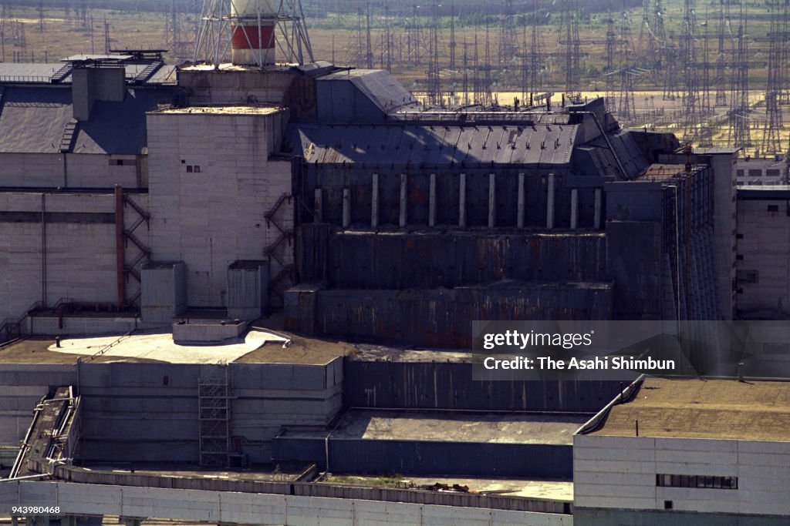
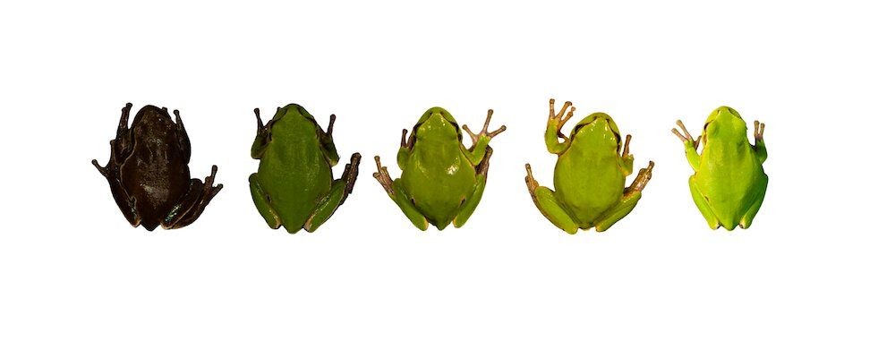

The Sarcophagus
The sarcophagus, also known as the object shelter, is a giant steel
and concrete structure covering block No.4 of the Chernobyl Nuclear
Power Plant. Built in the aftermath of the accident, the sarcophagus
was designed to limit the amount of radioactive contamination in the
environment by encasing the most dangerous area (block No.4) and
protecting it from climate exposure. The sarcophagus is, structurally,
mainly supported by the ruined reactor building. By 1996, the
structure had decayed so much that numerous stabilization measures
were required.
It was succeeded by the New Safe Confinement.

New Safe Confinement
The New Safe Confinement, or New Shelter, is a structure put in place in 2016 to contain the remains block No.4 of the Chernobyl Nuclear Power Plant. The structure also covers the temporary sarcophagus that was built around the reactor immediately after the accident. The New Safe Confinement is designed to prevent the release of radioactive contamination.
.jpg)
The exclusion zone
The Chernobyl Nuclear Power Plant Zone of Alienation was established shortly after the accident. Initially, Soviet authorities proclaimed it to be a 30-kilometer radius around the ruined power plant, and placing it under military control. Since then, its borders have been altered to cover a large chunk of north Ukraine. It joins together with the Polesie State Radiological Reserve in Belarus, making it an even bigger area. It is managed by the State Agency of Ukraine on Exclusion Management. The current area is approximately 2,600 km2.
Colour-changing frogs
In 2016, a pair of ecologists, Germán Orizaola and Pablo Burraco,
discovered several eastern tree frogs with an unusual black tint.
Eastern tree frogs usually have bright green dorsal colouration,
although occasional darker individuals can be found.
“Dark coloration is known to protect against different sources of
radiation,” the ecologists said. The black colour is the result of
melanin, a skin pigmentation found in many animals, humans included.
In amphibians, melanin can sometimes absorb and dissipate ionizing
radiation. The frogs with naturally lighter skin suffered severe cell
and DNA damage and died off at higher rates. The rare frogs that had
darker, melanin-rich skin had a better chance of surviving and
reproducing. Darker frogs would breed with other darker frogs, since a
lot of the lighter frogs died off, and their offspring would be dark
as well. Some frogs even became pitch black due to this.

Another fun fact about this topic is that the frogs get lighter the
farther you get from the high-radiation areas, creating a gradient
going from bright green from outside the alienation zone to a dark
green and eventually black closer to the centre.
Due to the Russian-Ukrainian war, research had to pause.
| Feature/trait | Frogs outside the exclusion zone | Frogs inside the exclusion zone |
|---|---|---|
| Typical skin colour | Bright green to olive green | darker olive green to charcoal to pitch-black |
| Melanin levels | Lower melanin levels | Higher melanin levels |
| skin luminance | 22.4% - 63.9% | 4.2% - 45.6% |
| Radiation exposure | Background (low/normal) | Historically elevated, ongoing ionizing radiation |
| Evolutionary driver | Standard environmental selection | Rapid natural selection favouring melanin rich skin |